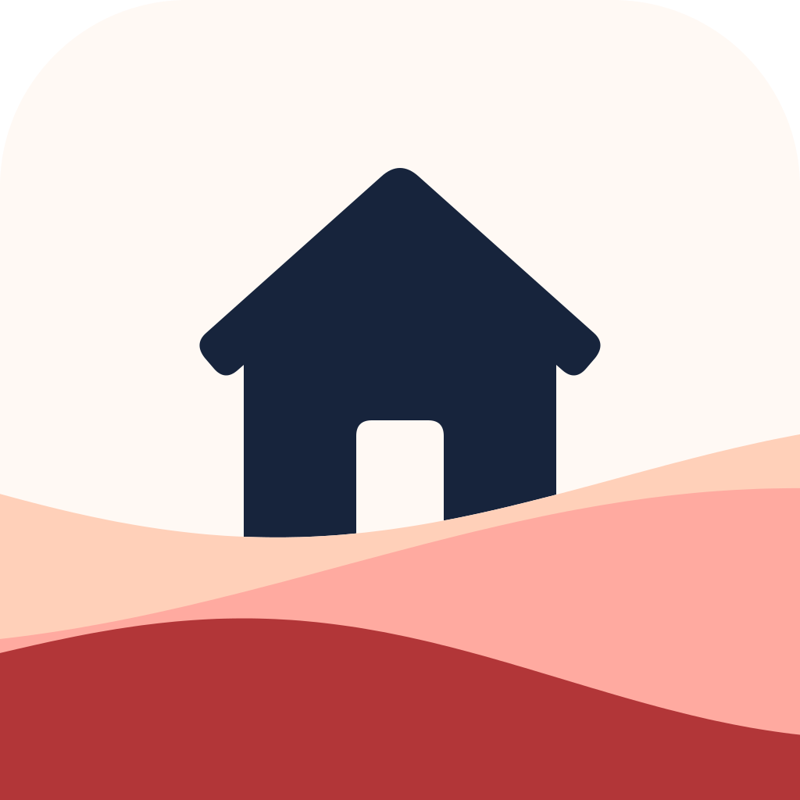

Privacy Policy
Updated November 6, 2026
Short version: Hearthlet does not require a separate app account and does not contain ads or third-party analytics. Personal tasks stay on your device unless you enable iCloud backup. Tasks you explicitly share with a household are stored through Apple’s CloudKit service and accessible to invited members. We do not operate a server that receives your task library.
Hearthlet is the new name for LastDone. This policy covers the renamed app and its optional cloud features. Older LastDone 1.0 builds do not include app-level iCloud backup or household sharing.
Who provides Hearthlet
Hearthlet is provided by Ravin Shah (“Hearthlet,” “we,” or “us”). You can contact us at ravinapps@icloud.com.
Information stored by Hearthlet
Hearthlet stores information you choose to enter, including your display name, task names and notes, categories, priorities, schedules, reminder preferences, and task event history such as completions, checks, skipped cycles, and pauses. Household-enabled builds also store room names, care notes, membership details, and the participant information needed to attribute shared actions. App appearance, icon, onboarding, and other preferences are also stored.
This information is stored locally in the app’s container. Optional iCloud backup and household sharing send the relevant data to Apple as described below; they do not send your task library to a developer-operated server.
Optional iCloud backup and household sharing
- Personal backup: If enabled in a supported build, a recovery archive of personal tasks and preferences is stored in your iCloud Drive. It excludes household membership and shared-task caches.
- Household sharing: Creating a household does not automatically share existing tasks. Explicitly shared tasks include their titles, schedules, room information, notes, care notes and history. Shared actions may include your chosen display name and CloudKit identity so invited members can see who acted.
- Individual reminders: Reminder enablement, alert time and lead time are kept on each participant’s device and are not included in household records.
- Apple services: Sharing uses private CloudKit invitations and Apple’s account, access-control and notification services. Apple processes that data under its own terms and privacy policy. We do not upload your contact list or operate a separate sharing server.
Widgets, Apple Watch, Siri, and notifications
- Widgets: Hearthlet places a limited upcoming-task snapshot in an Apple App Group container so its Home Screen widget can display it on the same device.
- Apple Watch: The paired iPhone is the source of truth. Relevant task information and actions can pass between your iPhone and Apple Watch through Apple’s WatchConnectivity system. We do not receive that information.
- Siri and Shortcuts: When you invoke a Hearthlet App Intent, Apple’s Siri and Shortcuts services may process your request under Apple’s privacy terms. Hearthlet receives only what is needed on your device to perform the requested action. We do not receive voice recordings or intent data on a developer-operated server.
- Notifications: Reminder content is scheduled locally through Apple’s notification system. Notification previews may be visible on the Lock Screen depending on your system settings.
Analytics, advertising, and tracking
Hearthlet does not include third-party analytics or advertising SDKs, does not use advertising identifiers, does not sell personal information, and does not track you across apps or websites.
System services and backups
Apple may process information needed to provide App Store distribution, TestFlight, Siri, notifications, widgets, Apple Watch connectivity, crash diagnostics you choose to share with developers, and device backups under Apple’s own terms and settings. Hearthlet is not responsible for information collected independently by Apple.
App-level backup and household sharing are optional and depend on the installed version and your settings. Your device’s general backup settings are controlled separately by you and Apple.
Website hosting
Our Support and Privacy Policy pages are hosted on GitHub Pages. When you visit these pages, GitHub logs and stores your IP address for security purposes. This applies to visits to the website and does not send your Hearthlet task library to GitHub. For details about GitHub's handling of personal information, see the GitHub General Privacy Statement.
Support correspondence
If you choose to email support, we receive the email address and information you include. Support is optional and is not part of Hearthlet’s primary task-tracking functionality. We use support correspondence only to answer the request, diagnose the reported issue, protect the app, and meet legal obligations. We do not use it for advertising or sell it.
Support correspondence is retained only as long as reasonably necessary to resolve the request and satisfy applicable legal obligations, then deleted. You may request deletion of a support message by emailing ravinapps@icloud.com.
Data retention and deletion
Tasks moved to Recently Deleted remain recoverable for up to 30 days unless you permanently delete them sooner. Shared task deletion is synchronized to household members when connectivity permits; limited deletion markers are retained to prevent stale devices from recreating removed tasks.
Removing the app normally removes its local container, subject to Apple’s backup and restore behavior. It does not automatically delete iCloud backups or household data. Manage sharing through Household in Settings and backup storage through your iCloud settings. When an owner stops sharing, the app keeps a personal copy; a participant leaving removes their local household copy. Ending a share revokes access for other members, but the owner’s private iCloud records may remain. Pending changes and local reminder choices are tied to the original iCloud account and are not uploaded to a different account after sign-out. Other people may already have copied information they were authorized to see.
Older iCloud backups may retain previous personal task data until those backups are replaced or deleted. Because we do not operate the task storage service, support cannot recover or delete your iCloud library for you.
Children
Hearthlet is a general productivity app and is not directed specifically to children. It does not knowingly collect personal information from children.
Changes to this policy
We may update this policy when Hearthlet’s features or practices change. The effective date above will be updated, and material changes will be reflected in the app or on this page as appropriate.
Contact
For privacy questions or deletion requests concerning support correspondence, email ravinapps@icloud.com. For product help, visit Hearthlet Support.